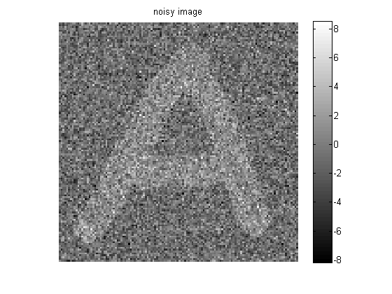
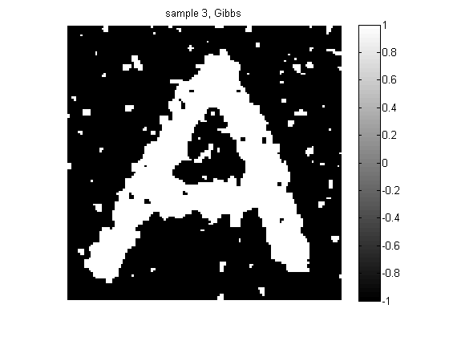
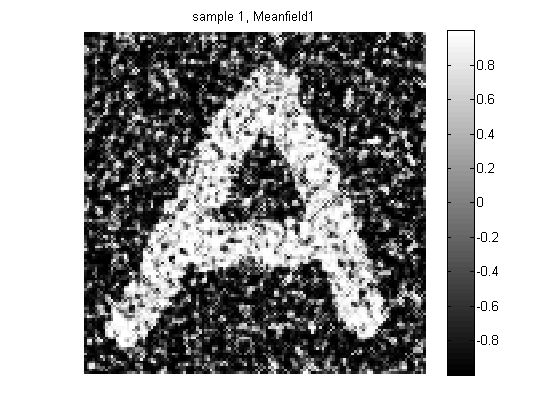
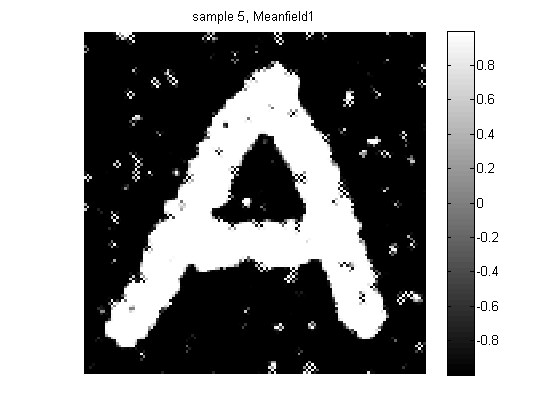
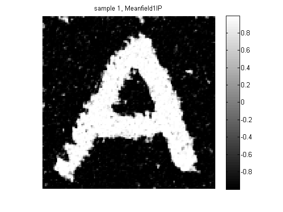

Image denoising using Ising prior and Gibbs sampling or mean field
Contents
function isingImageDenoiseDemo()
Generate Data
input matrix consisting of letter A. The body of letter A is made of 1's while the background is made of -1's.
setSeed(0); sigma = 2; % noise level data = loadData('lettera'); img = data.A; [M, N] = size(img); %#ok img = double(img); m = mean(img(:)); img2 = +1*(img>m) + -1*(img<m); % -1 or +1 y = img2 + sigma*randn(size(img2)); %y = noisy signal
J = 1; % coupling strength
CPDs = { gaussCreate(-1, sigma^2), gaussCreate(+1, sigma^2) };
figure; imagesc(y); colorbar; title('noisy image'); axis('square'); colormap gray; axis off; printPmtkFigure('isingImageDenoise');
methods = {'Gibbs', 'MeanfieldH', 'MeanfieldHIP', 'Meanfield1', 'Meanfield1IP'};
for m=1:length(methods)
method = methods{m};
maxIter = 15;
progressFn = @(X, iter)plotter(X, iter, method);
postMean = @meanFieldIsingGrid;
args = {'maxIter', maxIter, 'progressFn', progressFn};
switch lower(method)
case 'meanfieldh',
args = [args {'updateRate', 0.5, 'inplaceUpdates', false}];%#ok
case 'meanfieldhip',
args = [args {'updateRate', 0.5, 'inplaceUpdates', true}]; %#ok
case 'meanfield1',
args = [args {'updateRate', 1 , 'inplaceUpdates', false}];%#ok
case 'meanfield1ip',
args = [args {'updateRate', 1 , 'inplaceUpdates', true}]; %#ok
otherwise
postMean = @gibbsIsingGrid;
end
mu = postMean(J, CPDs, @gaussLogprob, y, args{:});
figure;
imagesc(mu);
colormap('gray');
colorbar;
title(sprintf('mean after %d sweeps of %s', maxIter, method));
axis('square');
axis off;
printPmtkFigure(sprintf('isingImageDenoise%sMean', method));
end
end function plotter(X, iter, method)
plot intermediate results
if any(iter == [ 1, 3, 5]) figure; imagesc(X); axis('square'); colormap gray; axis off; colorbar; title(sprintf('sample %d, %s', iter, method)); printPmtkFigure(sprintf('isingImageDenoise%s%d', method, iter)); end   
end